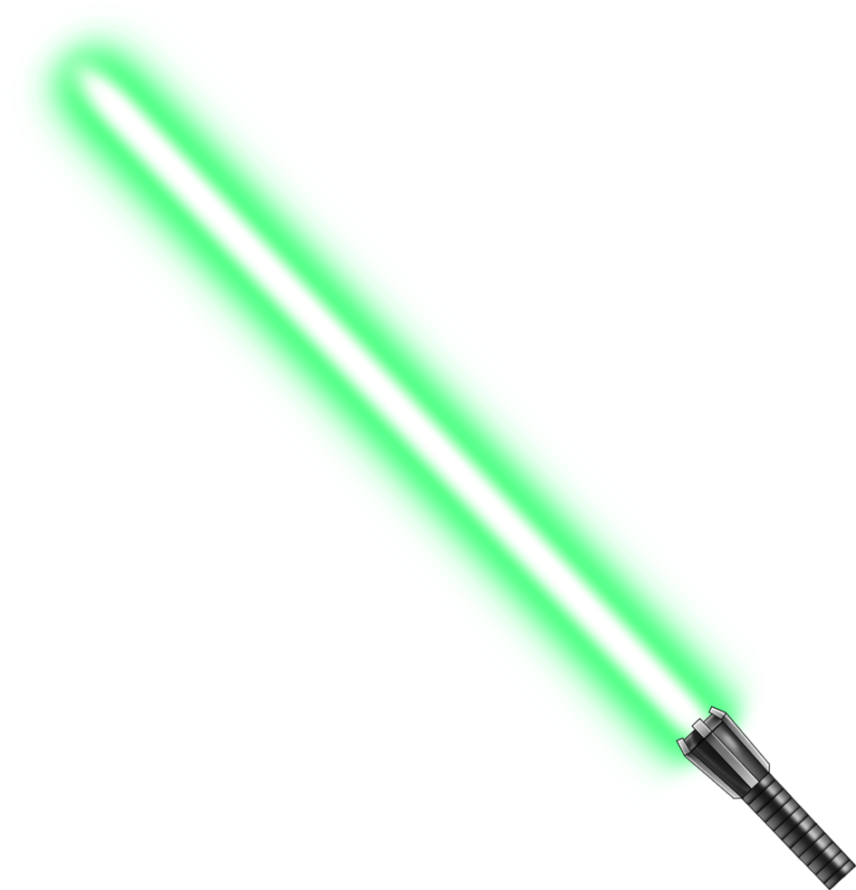
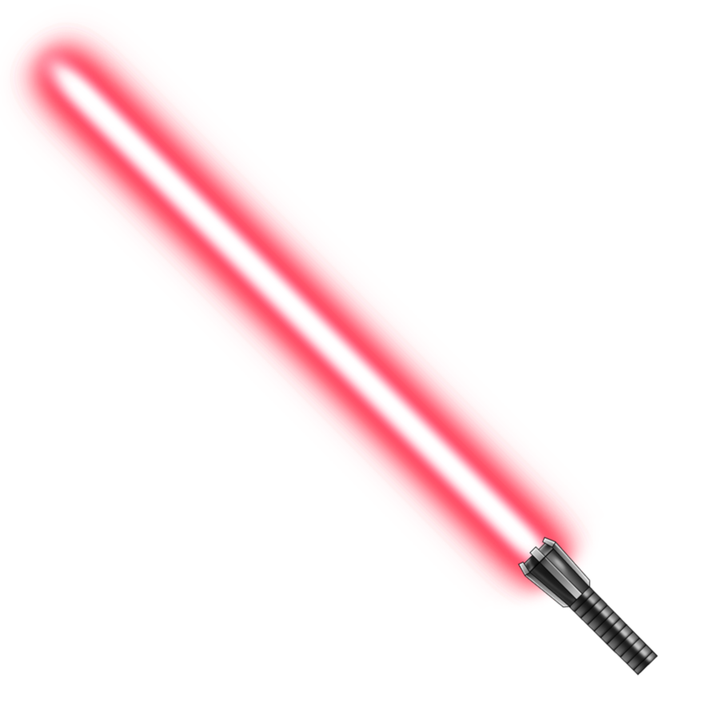
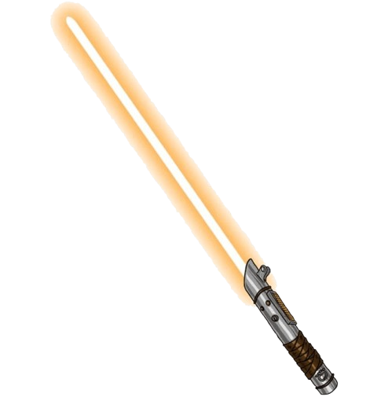
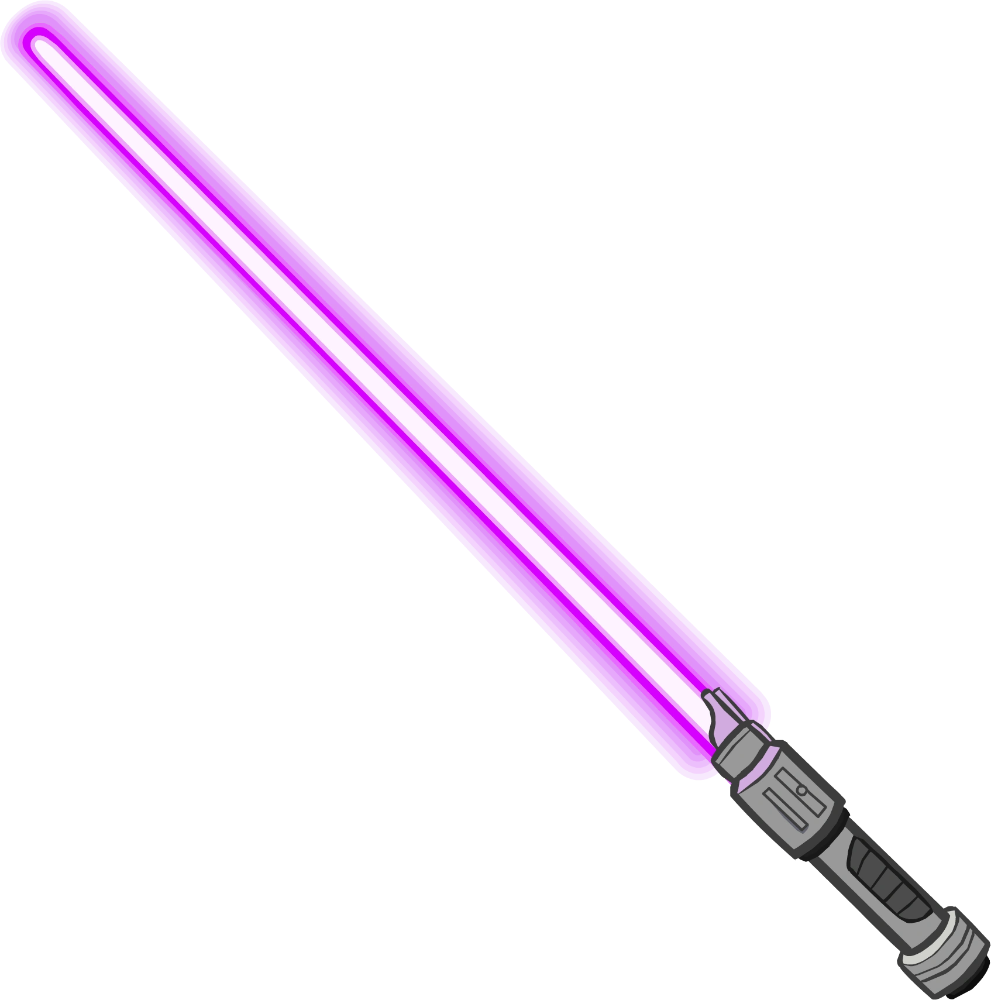
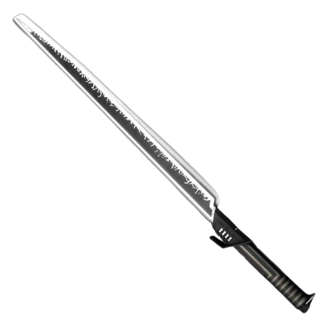

Lightsabers: The Elegant Weapon
Lightsabers are the weapon of choice for Jedi, Sith, and others sensitive to the Force. Each blade is unique, reflecting the personality and allegiance of its wielder.

Blue Lightsaber
Obi-Wan Kenobi, Anakin Skywalker

Green Lightsaber
Luke Skywalker, Yoda

Red Lightsaber
Darth Vader, Darth Maul

Orange Lightsaber
Baylan Skoll, Shin Hati

Yellow Lightsaber
Rey, Jedi Sentinels

Purple Lightsaber
Mace Windu

White Lightsaber
Ahsoka tano

Darksaber
Bo-Katan, Darth Maul, Moff Gideon